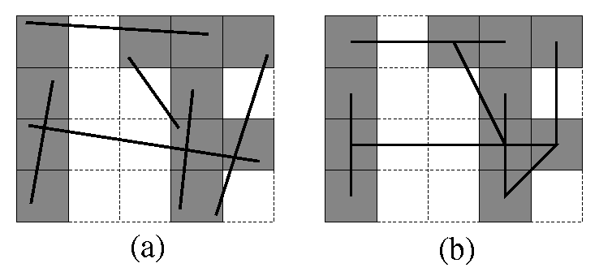
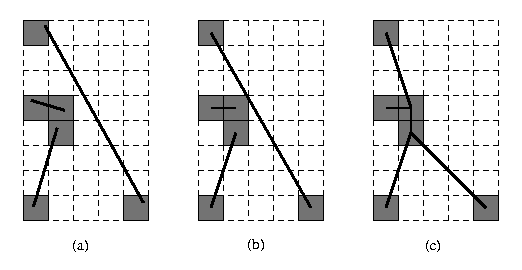

|
CGAL 6.2 - 2D Snap Rounding
|
Loading...
Searching...
No Matches
|
CGAL 6.2 - 2D Snap Rounding
|
Most geometric operations, such as computing the intersection of two segments, require higher precision to represent correctly the output than the input. For example, if the coordinates of the segment endpoints are integers of \(d\) digits, the coordinates of their intersection point are, in general, rational numbers with a numerator of \(3d+O(1)\) digits and a denominator of \(2d+O(1)\) digits.
Arbitrary precision number types, such as those used in CGAL kernels providing exact constructions, enable representing these results without loss of precision. On the other hand, limited precision number types must generally round the result. However, such rounding may produce self-intersections and topology changements as illustrated in Figure 38.1.
Figure 38.1 Two segments that do intersect (a), these segment with their intersection point rounded (b), This rounding may introduce new intersections.
To solve the problem of naive rounding, multiple methods have been developed converting arbitrary-precision arrangements of segments into a representation with reduced precision while preventing the introduction of new intersections and preserving the topology "up to collapse". More formally, seeing the rounding as a movement, if two points became equal during the motion, they must be equal at the end of the motion. This package provides two such algorithms:
The former (Hot Pixel SR) provides more predictable outputs and its iterative variant ensures a minimum distance of half a pixel between a vertex and any non-incident edge, while the latter (Vertical Slab SR) offers improved performance and supports a wider range of rounding schemes, including floating-point representations.
Both methods share a similar API, and can be invoked through the CGAL::snap_rounding_2() function.

Figure 38.2 An arrangement of segments before (a) and after (b) SR (hot pixels are shaded)
Hot Pixel Snap Rounding (HPSR) is a well-established method with extensive literature [1], [2], [4]. Iterative Snap Rounding (ISR) is a refinement of Hot pixel SR in which each vertex is guaranteed to lie at least half a pixel width away from any non-incident edge [3].
Let \(\mathcal{S}\) be a finite set of segments in the plane. The arrangement \(\mathcal{A}(\mathcal{S})\) is the subdivision of the plane into vertices, edges, and faces induced by \(\mathcal{S}\). A vertex is either a segment endpoint or an intersection point.
Given such an arrangement with arbitrary-precision coordinates, Hot Pixel SR algorithm proceeds as follows. We tile the plane with a grid of unit squares, pixels, each centered at a point with integer coordinates. A pixel is hot if it contains a vertex of the arrangement. Each vertex of the arrangement is replaced by the center of the hot pixel containing it and each edge \( e\) is replaced by the polygonal chain through the centers of the hot pixels met by \( e\), in the same order as they are met by \( e\). Figure 38.2 demonstrates the results of SR.
In a snap-rounded arrangement, the distance between a vertex and a non-incident edge can be extremely small compared with the width of a pixel in the grid used for rounding. ISR is a modification of SR which makes a vertex and a non-incident edge well separated (the distance between each is at least half-the-width-of-a-pixel). However, the guaranteed quality of the approximation in ISR degrades. Figure 38.3 depicts the results of SR and ISR on the same input. Conceptually, the ISR procedure is equivalent to repeated application of SR, namely we apply SR to the original set of segments, then we use the output of SR as input to another round of SR and so on until all the vertices are well separated from non-incident edges. Algorithmically we operate differently, as this repeated application of SR would have resulted in an efficient overall process. The algorithmic details are given in [3].

Figure 38.3 An arrangement of segments before (a), after SR (b) and ISR (c) (hot pixels are shaded).
Vertical Slab Snap Rounding algorithm is inspired by 3D snap rounding techniques [5]. It subdivides the segments vertical slabs to prevent intersections during the rounding process. The algorithm is illustrated in Figure Figure 38.4 and proceeds as follows. First, the segments are subdivided at their (potential) intersection points. Then the vertices are processed from left to right. Whenever a vertex lies too close to a segment, that segment is subdivided at the \(x\)-coordinate of the vertex. Finally, the vertices are rounded.
Figure 38.4 An arrangement of segments before subdividing the segments (a), after subdividing the segments (b) and after rounding (c).
We evaluate the different methods on two tests: In the first test, the segment endpoints are chosen uniformly and independantly in the unit box. In the second test, we generate perturbed copies of a given segment. This experiment is repeated several times using different input segments. The two pixel sizes for hot pixel snap rounding are chosen such that the rounding shift is of the same order of magnitude as the rounding induced by using double or float coordinates.
The first test is standard but typically exhibits few, if any, rounding issues. The second test is deliberately designed to be difficult, as it produces a large number of rounding issues when rounding is performed naively. In these settings, vertical slab snap rounding significantly outperforms hot pixel snap rounding and remains of the same order of magnitude than computing the intersections without snap. The result of our test is summarized in the next table:
| Test Case | Computing intersection (Unsafe rounding) | Vertical slab SR (double) | Vertical Slab SR (float) | Hot pixel SR (pixel size \(10^{-15}\) ) | Hot pixel SR (pixel size \(10^{-7}\)) |
|---|---|---|---|---|---|
| 500 Random Segments | 0.066s | 0.213s | 0.172s | 6.14s | 3.81s |
| 1000 Random Segments | 0.241s | 0.928s | 0.769s | 52.1s | 53.5s |
| 1500 Random Segments | 0.566s | 2.88s | 2.93s | 201s | 197s |
| 2000 Random Segments | 1.15s | 5.37s | 5.468s | 452s | 446s |
| 200 Almost identical Segments | 0.073s | 0.114s | 11.9s | 2.13s | 3.41s |
| 300 Almost identical Segments | 0.133s | 0.284s | 44.1s | 8.58s | 14.2s |
| 400 Almost identical Segments | 0.262s | 0.620s | 102s | 32.2s | 42.0s |
| 500 Almost identical Segments | 0.404s | 1.31s | 206s | 69.2s | 87s |
Both methods run in \(O(n \log n + k)\), where \(n\) is the number of input segments and \(k\) is the number of vertices created during the process. In the worst case, the number of created vertices is \(O(n^3)\), or \(O(n^2)\) if the input segments are free of intersections.
Both algorithms can be invoked through the CGAL::snap_rounding_2() function. CGAL::snap_rounding_2() take a range of input segments and, by default, produces a range of polylines, each polyline corresponding to an input segment. Consequently, duplicate segments may appear in the output, for instance when multiple input segments collapse. When the parameter output_unique_segments is set to true, the polylines are decomposed into individual segments (they are represented as polylines with two points), and duplicates are removed. An overload also supports as input and output polygon ranges. By default, the Vertical Slab Snap Rounding algorithm to double precision is used. The other method or other rounding schemes can be used depending on the traits class provided. Specific methods also exist: CGAL::vertical_slab_snap_rounding_2() and CGAL::hot_pixel_snap_rounding_2.
When using Hot Pixel SR, the traits class must be a model of HotPixelSnapRoundingTraits_2. The class Hot_pixel_snap_rounding_traits_2 is such a model.
When using Vertical Slab SR, the traits class must be a model of VerticalSlabSnapRoundingTraits_2. By default, the traits class Double_grid_snap_rounding_traits_2, which rounds coordinates to double precision floating point, is used. The package also provides Float_grid_snap_rounding_traits_2 and Integer_grid_snap_rounding_traits_2, which rounds coordinates to single precision floating point and integers, respectively. Other traits classes can be used to round to different representations or rounding schemes as long as the rounding operation preserves the order of vertices along the \(x\) and \(y\) directions. See VerticalSlabSnapRoundingTraits_2 for more details.
The following example snaps on integers using Hot Pixel SR a instance of four segments.
Example: Snap_rounding_2/snap_rounding_to_integer.cpp
The following example snaps on double a non-trivial instance of five segments.
Example: Snap_rounding_2/snap_rounding_to_double.cpp
The following example generates an Iterative SR representation of an arrangement of four line segments and outputs the resulting polylines in a plane tiled with one-unit square pixels.
Example: Snap_rounding_2/iterative_snap_rounding.cpp
The package is supplied with a graphical demo program that opens a window, allows the user to edit segments dynamically, applies a selected snap-rounding procedures, and displays the result onto the same window (see <CGAL_ROOT>/GraphicsView/demo/Snap_rounding_2/Snap_rounding_2.cpp).
Snap Rounding and Iterative Snap Rounding was introduced by Eli Packer in 2001.
Vertical Slab Snap Rounding was introduced by Léo Valque in 2026. Snap Rounding was renamed Hot Pixel Snap Rounding to avoid ambiguity.